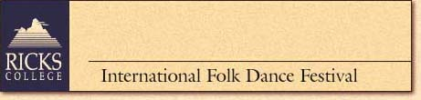
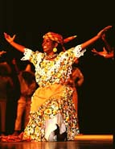

 |
|
| July
30-August 5, 2000
COST: $401 |
Top • Back |
| IDAHO INTERNATIONAL
FOLK DANCE FESTIVAL: CUSTOMS, CULTURE, DANCE
Rich and diverse learning experiences await hostelers as dancers from eight to ten countries converge in Rexburg for the 15th Annual Idaho International Folk Dance Festival. Be at the heart of this colorful action-packed week as representatives of each country come to class to share customs, costumes, dance, and friendship. Explore the uniqueness of each country with an in-depth look at the cultural setting of each nationality. Your experience will include attendance at two Folk Dance Festival performances, and a local rodeo. In 1999, dancers came from Thailand, Austria, China, Hungary, New Zealand, Armenia, Poland, and the U.S.A. |
|